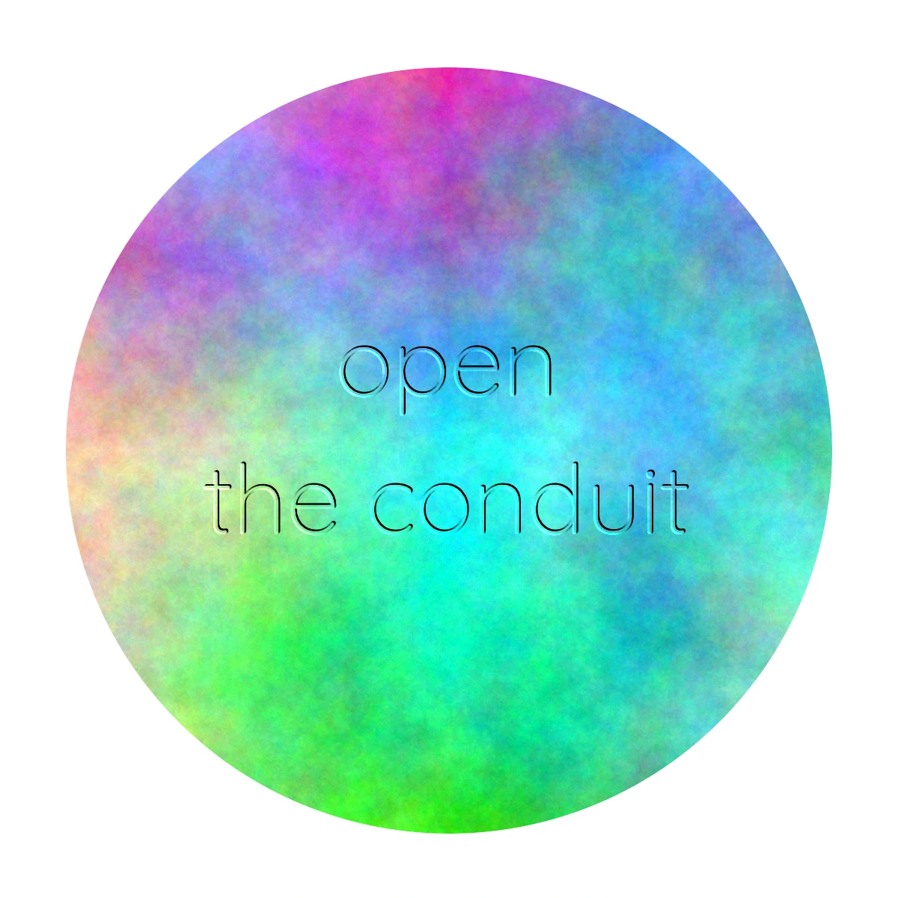

Conduit is a local AI workspace for exploring ideas.
Most AI chat applications treat a conversation as a linear stream: ask a question, receive an answer, and continue from there. Conduit takes a different approach.
Explore without losing the alternatives. Conversations in Conduit can branch. You can take an idea in one direction, return to an earlier point, and explore another without losing the paths you have already taken.
Work with more than one AI. Conduit can use multiple local language models as different experts, allowing different models to contribute to the same exploration. Just place the chosen language models on your Desktop (if not the application folder).
Download new packs of experts from the Community If you don't want to design your own pack of experts with your favorite LLM's choose one from the community or our curated lists on the website.
Keep your AI local. Conduit is designed to work with language models running on your own computer. Your conversations and models can remain local, and an Internet connection is not required for the AI itself. It can use language model files directly from your desktop.
Build context over time. Conduit maintains useful summaries and context from previous conversations, allowing ideas and interactions to accumulate without requiring an ever-growing prompt.
Open and hackable. Conduit is built to be inspected, modified and extended. The source is available for anyone who wants to understand how it works, experiment with it, or build something new from it.